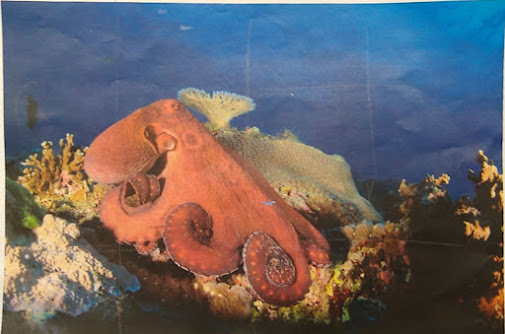
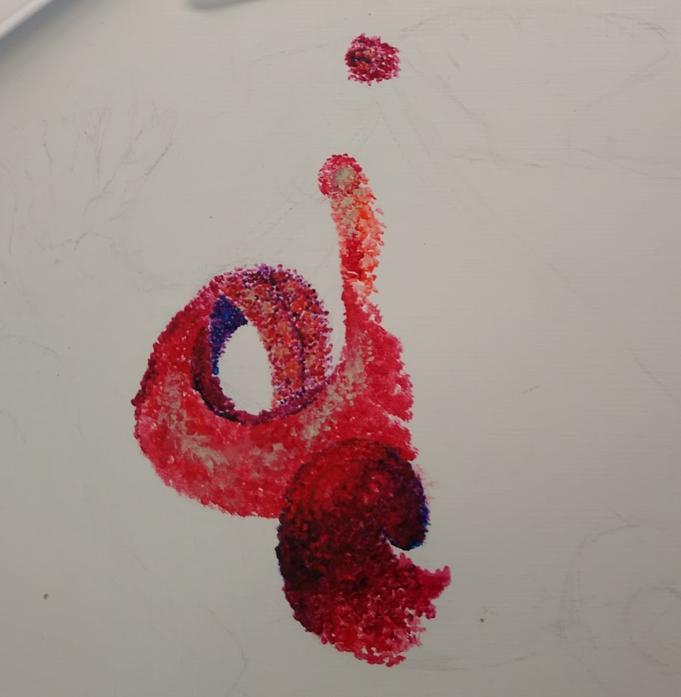
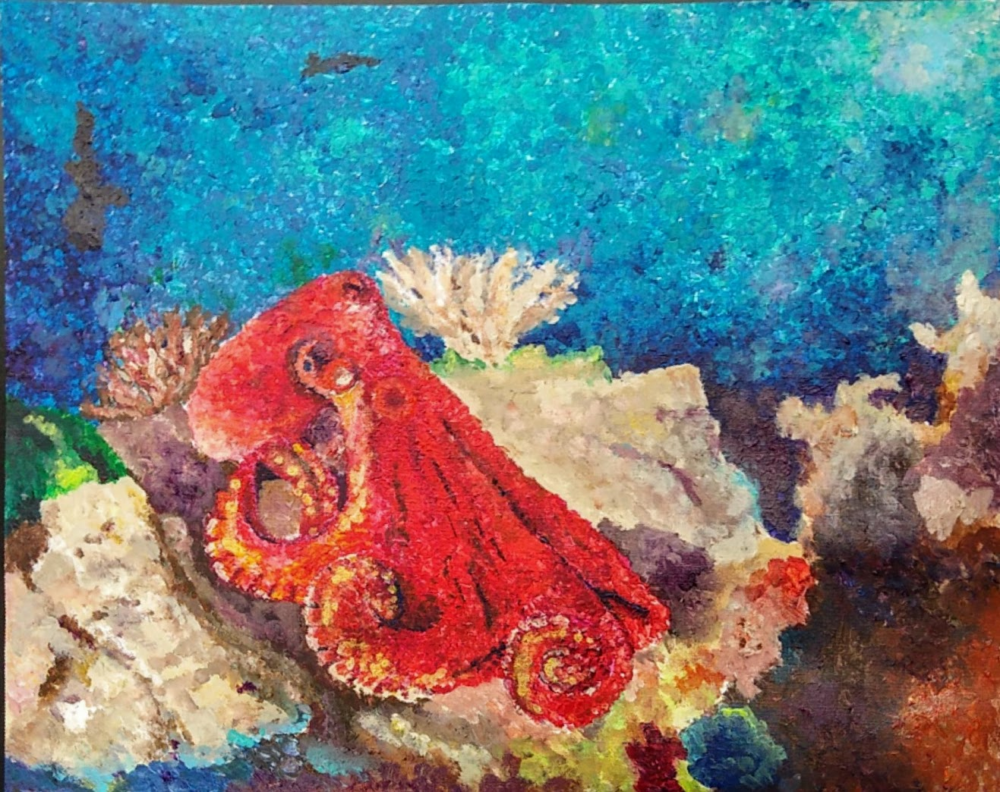
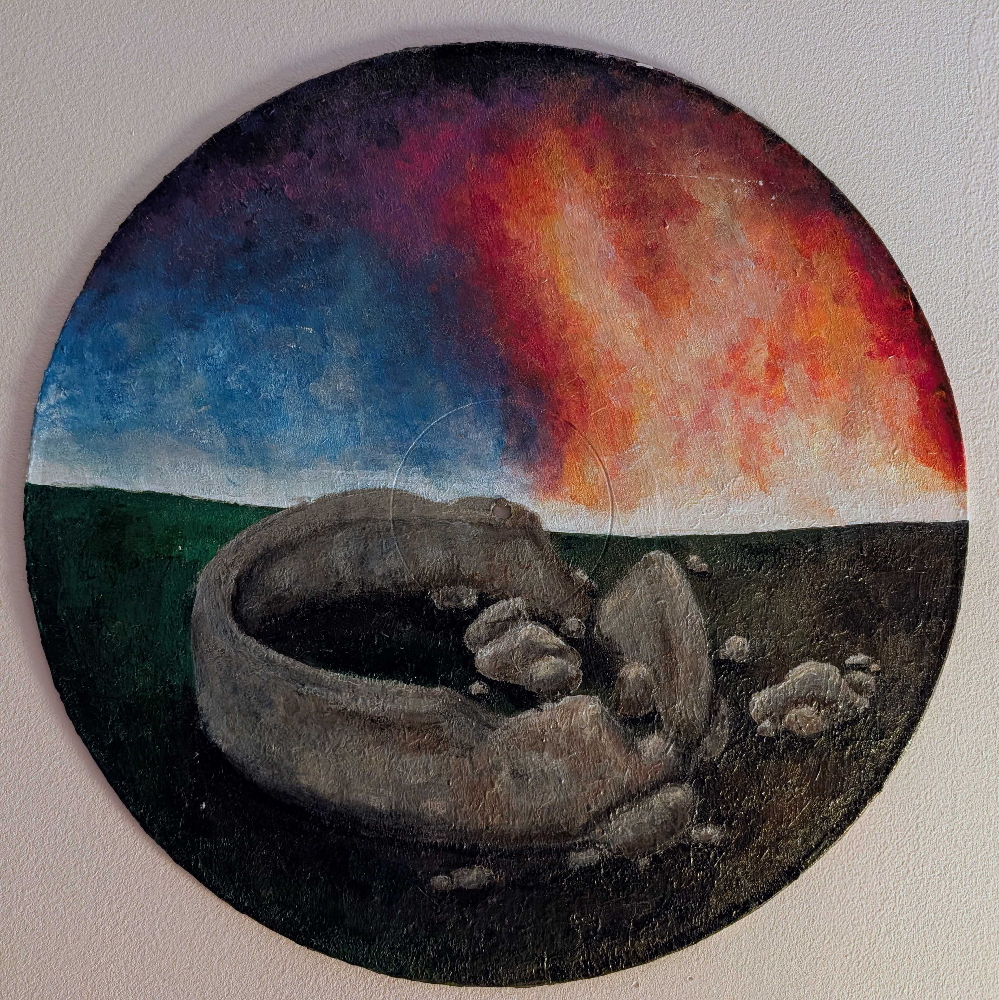
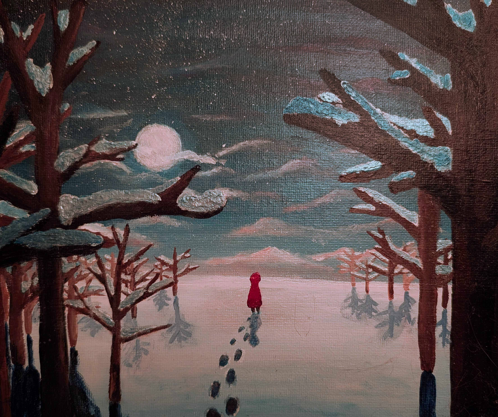
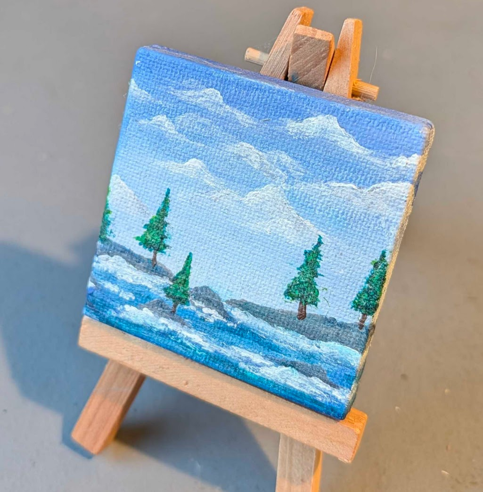
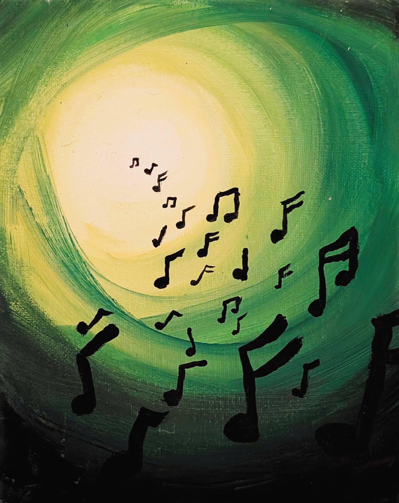
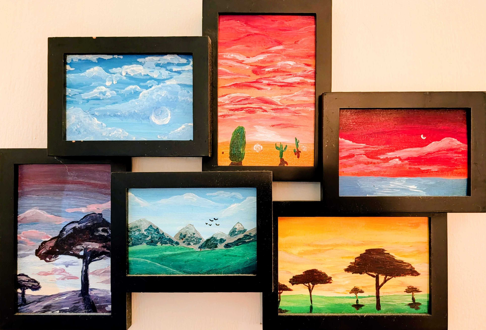

Like most people, traditional art was where I started. I was never great with a pencil beyond doodles in class, but I have always loved to paint.
I have never been able to try oil paints, since they are a pain to use, dangerous without ventalation, and expensive. Hence, the art below is all done in acrylic paint with no additional medium.
This was a painting I made for my high school art class. The teacher laid out a bunch of under water photos printed out, and let us each pick our own to do. I selected the reddish-orange octopus shown below. I remember thinking the color contrast was very interesting and I always loved the animal, so it felt like the right choice.
The painting was supposed to be an attempt at pointalism. You can see in my early stages I tried harder to make individual dots, but this disappeard quickly. Thankfully my art teacher was wonderful, and didn't care what I did as long as I was creating.
It became more of a study in pushing my colors, since I sometimes struggled at the time to select bright, contrasting colors. I also didn't usually work from a refrerence at this stage in my life, so I remember having to work pretty hard to keep the reference in mind
Overall the painting came out better than I could have imagined. It's still one of my favorites, and I ended up getting it properly framed (since it was just on canvas roll) and hung on my wall.




This was another assignment from the same art class as the octopus. The idea was to pick a song, and listen to it on repeat while we painted something from inspiration, on an old record.
The song I picked was Pompeii by Bastille. I think I picked it because this was right after when family and I visited Italy and were privilaged enough to see Pompeii in person.
I really like the colors in this, and I think you can certainly see what I was going for here. However, I would have liked to push myself further to include more details in the ruins, as well as to tie the sky and ground/ruins together a bit better. Since this was a class assignment, I was almost certainly limited by time. This is a project I would definely like to try again with more experience under my belt, and without a time constraint. I think I could make something really great with this idea.

I painted this right after I was gifted some iridescent acrylic paints. The white iridescent paint really reminded me of snow.
This was definitely heavily inspired by The Snowy Day, the classic children's book by Ezra Jack Keats, but I don't think that was my intention. Imagery from the book must have just stuck with me for many years; it is very striking to picture someone fully dressed in red against the stark white snow, with a trail of their footprints leading up to them. It's no wonder it stuck with me.
I think this painting could really benefit from some improved texturing of the snow, particularly on the trees, but I am happy with it considering that it is quite a few years old at this point. Perhaps this another one I will redo someday.
This is a small painting, about 2"x2". I remember nothing about the creation of this paiting. What I do remember is that, when I finished it, I went to go show it to my dad.
He really liked it, and asked me if he could have it. I joked that I would sell it to him for all the money in his wallet. He agreed before he checked how much he had.
We both expected this to be low, maybe $10, since he never carried cash. Lo and behold, he happened to have $60! To this day, this is the most money I've made from any of my art.
The painting now has a permanant home in my dad's office, displayed on a proportonally small easel.

There isn't much story behind this one. I painted this when I was much younger, probably between 10-12.
I was just playing around with getting used to acrylic paint, seeing how it works and blends, and I made the spiraling design which I found fun to look at.
I don't know why I chose music notes, but I was very happy with this one when I made it, and I still find it fun.
Since it's old and survived a move, it's a bit scratched up, so I might have to touch it up some day.

There's not really any story for this one, either. I don't remember where the photo frame came from, but I figured it would be nice for a set of paintings. Since there were 6, I ended up making one for each color of the rainbow.
I didn't spend much time on this one, so I think it could do with a lot of improvements, but I do get quite a few complements on it when people visit and see it.
I have no idea why it's purple to red, instead of red to purple. This bothers me every time I look at it, especially because I can't think of why I did it backwards in the first place.
This is definitely a project I will be redoing in the future, since I think I can do a way better job. It deserves a bit of a refresh.
